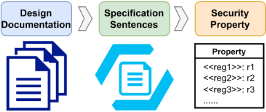
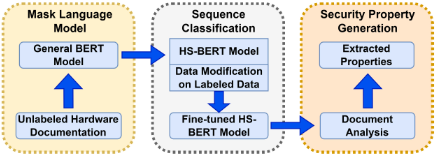
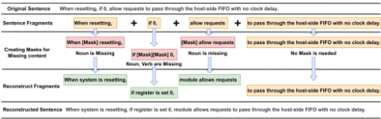

NSPG：基于自然语言处理（NLP）的硬件安全保障安全属性生成器
该论文针对硬件安全属性生成长期依赖专家经验、耗时且不鲁棒的问题，提出首个基于 NLP 的自动化安全属性生成框架 NSPG。方法上，作者用 OpenTitan、RISC-V、OpenRISC、MIPS、OpenSPARC 文档共 15583 句，结合 Random Insertion 等数据增强预训练出硬件安全专用语言模型 HS-BERT，再以人工标注语料配合 Fragment Insertion/MOT 数据修改微调序列分类模型，从规格文档中筛选安全属性句，并借助寄存器清单补全后转为 SystemVerilog 断言。在 5 个未训练过的 OpenTitan IP 文档上，NSPG 从 1723 句中提取出 326 条可用安全属性，其中 58 条未被 DV 测试用例覆盖，并据此在 Hack@DAC 2022 buggy SoC 的 5 个 IP 中发现 8 个安全漏洞；属性分类准确率最高达 88%，优于 ChatGPT。对团队而言，该工作验证了从规格文档自动生成断言/属性的可行路径，可迁移到 LPDDR/UCIe 等协议属性的半自动提取与检查点补全。
传统硬件安全属性生成依赖开发者/专家经验，耗时、不鲁棒且仅覆盖少数 IP；论文希望从大量 SoC 规格文档中自动识别并生成安全属性，并转换为硬件断言，以减少硬件验证的人工投入。
三阶段流程：(1) 用 OpenTitan/RISC-V/OpenRISC/MIPS/OpenSPARC 文档的 15583 句构建 D_pre，结合四种数据增强（Random Swap、Random Deletion、Synonym Replacement、Random Insertion）对 BERT 做 MLM 预训练，得到硬件安全专用模型 HS-BERT（RI 效果最佳，perplexity 4.795）；(2) 用人工标注的 4427 句（D_cls）配合硬件领域特定的 Fragment Insertion 与 MOT 数据修改微调序列分类模型（SCM），识别文档中的安全属性句；(3) 对提取句子做完整性检查（寄存器名词+操作动词+取值结构），结合文档寄存器清单补全术语，转换为 SystemVerilog 断言，并基于属性构造约束生成测试用例做 assertion-based 安全验证。
安全属性分类最高准确率达 88%，优于 ChatGPT（在 50 句评测集上 ChatGPT 准确率/召回/F1 为 68%/88%/73%，NSPG 均为 100%）
HS-BERT 经微调后在准确率与召回上超过 General BERT 与 SciBERT，数据修改带来平均 3.95% 准确率提升（General BERT 为 0.6%，SciBERT 为 3.1%）
Random Insertion 数据增强在四种 DA 中表现最佳，MLM perplexity 降至 4.795
采用 MOT 数据修改的 SCM 在验证集 D_val 上平均准确率 82%、召回 90%
在 5 个未训练过的 OpenTitan IP 文档上：处理 1723 句，提取 344 句潜在安全属性，326 句（94%）可用于生成安全属性；其中 268 条已被 DV 覆盖，58 条未被 DV 测试用例覆盖
基于 326 条安全属性构造约束与 SystemVerilog 断言，在 Hack@DAC 2022 buggy OpenTitan SoC 的 5 个 IP（Key Manager、LC Controller、HMAC、KMAC、OTP Memory Controller）中发现 8 个安全漏洞
数据集规模：预训练 15583 句、标注训练 4427 句（含 2191 条安全属性相关句）、验证 708 句，标注约耗 24 工程小时；提取属性核验约耗 3 工程小时
对比传统文本分类器：TF-IDF 准确率 OpenTitan 70%/RISC-V 61%，Bag-of-Words 51%/53.12%，HS-BERT 显著更优
据论文所述是首个利用 SoC 文档自动生成安全属性的技术，并提出首个硬件安全专用语言模型 HS-BERT；与 Isadora（依赖 testbench 与仿真轨迹、可扩展性受限）、PCHIP（仅限密码电路）、SCIFinder（缺乏对复杂处理器的可扩展性）不同，NSPG 直接从文档出发，不依赖信息流追踪；同时提出硬件领域特定的数据增强（RS/RD/SR/RI）与 Fragment Insertion/MOT 数据修改方法。
相关度级别：high
命中能力域：2.4 设计验证方法学 | 2.7 EDA/验证自动化与 AI 辅助
理由：论文直接命中 2.4 与 2.7 两个能力域：其核心是把规格文档自动转化为安全属性与 SystemVerilog 断言，属于断言/属性生成这一验证方法学核心环节的 AI 自动化。团队各产品线（LPDDR5X/LPDDR6、HBM4、UCIe、DDR5/MRDIMM）都存在大量英文规格文档与寄存器描述，手写 SVA 与检查点梳理耗时；NSPG 的 HS-BERT + 序列分类 + 属性补全流程可迁移为团队内部的协议/安全属性半自动提取流水线，尤其适合 HBM4/UCIe 中安全相关特性与 LPDDR 操作约束的检查点补全（论文显示 58/326 条属性未被 DV 覆盖，说明此类方法能发现验证盲区）。其数据增强与领域微调经验对团队建设 2.7 域 AI 辅助验证能力也有直接参考价值。
建议动作：深入精读并做内部分享
Xingyu Meng
美国德克萨斯大学达拉斯分校（The University of Texas at Dallas）
Pedro Henrique Silva 阿联酋技术创新研究院（Technology Innovation Institute）
Amisha Srivastava 美国德克萨斯大学达拉斯分校（The University of Texas at Dallas）
Ayush Arunachalam 美国德克萨斯大学达拉斯分校（The University of Texas at Dallas）
Rafail Psiakis 阿联酋技术创新研究院（Technology Innovation Institute）
Yiorgos Makris 美国德克萨斯大学达拉斯分校（The University of Texas at Dallas）
Avik Ray 美国亚马逊Alexa（Amazon Alexa）
Kanad Basu 美国德克萨斯大学达拉斯分校（The University of Texas at Dallas）
验证复杂片上系统（System-on-Chip，SoC）的效率取决于所提供安全属性的质量。采用传统方法生成安全属性通常需要专家介入，且仅限于少数 IP，从而导致流程耗时且不够稳健。为解决这一问题，我们首次提出了一种新颖的、自动化的基于自然语言处理（Natural Language Processing，NLP）的安全属性生成器（Security Property Generator，NSPG）。具体而言，我们的方法利用硬件文档，提出了首个面向硬件安全的专用语言模型 HS-BERT，用于提取专用于硬件设计的安全属性。该模型能够解析大量硬件规范，且所生成的安全属性可以轻松转换为硬件断言，从而减少硬件验证所需的人工投入。NSPG 使用来自多份 SoC 文档的句子进行训练，在属性分类方面最高达到 88% 的准确率，优于 ChatGPT。在五个未经训练的 OpenTitan 硬件 IP 文档上进行评估时，NSPG 协助在 Hack@DAC 2022 上展示的含缺陷 OpenTitan SoC 中识别出八个安全漏洞。
硬件安全属性，属性生成
现代计算系统构建于片上系统（System-on-Chip，SoC）之上，因为它们通过使用多个知识产权（Intellectual Property，IP）核提供了高度的集成度。然而，这也带来了新的安全挑战，因为一个IP核中的漏洞可能会影响整个系统的安全 [4]。因此，硬件安全验证对于确保设计的安全性与可信性而言势在必行。MITRE面向硬件的通用缺陷枚举（Common Weakness Enumeration，CWE）对硬件设计中常见的安全弱点进行了分类，其中包括安全流程、特权与访问控制、复位控制、存储器与存储、外设与片上互连结构，以及调试与测试等方面的问题 [3]。
本作品依据知识共享署名国际4.0许可协议（Creative Commons Attribution International 4.0 License）进行许可。
DAC '24，2024年6月23-27日，美国加利福尼亚州旧金山 © 2024 版权归所有者/作者所有。ACM ISBN 979-8-4007-0601-1/24/06 https://doi.org/10.1145/3649329.3656255

传统的属性生成方法通常需要开发人员的经验，既耗时又不健壮 [4]。然而，如图1所示，我们认为通过分析技术文档中的操作细节来生成大量安全属性是可行的。生物医学领域的现有研究（如BioBERT）已经表明，文本和文档能够提供专业领域的关键信息，可用于对通用的基于Transformer的双向编码器表示（Bidirectional Encoder Representations from Transformers，BERT）语言模型进行微调，以实现文本生成和短语分类 [1]。因此，我们打算将这一概念应用于硬件安全领域，并开发一个名为基于自然语言处理的安全属性生成引擎（NLP-based Security Property Generator engine，NSPG）的全自动安全属性生成引擎。NSPG能够显著减少为SoC验证自动生成安全属性所需的人工工作量。
据我们所知，NSPG是首个利用SoC文档来生成SoC安全属性的技术。我们的贡献总结如下：
本文的其余部分组织如下。第2节介绍背景。第3节包含所提出的技术。第4节展示对所提出技术的评估。第5节讨论所提出技术的能力。第6节介绍有关安全属性生成的相关工作。最后，第7节对本文进行总结。
在本节中，我们将介绍一些关于硬件安全（HS）属性以及用于开发所提出的 NSPG 框架的自然语言处理（NLP）的背景知识。
安全属性的规范往往因所选用的安全分析方法而异，导致所得到的规范通常特定于所采用的验证工具或模型。Listing 1 给出了一个基于安全属性描述的 SystemVerilog 断言示例。这表明，为了给验证机制生成合适的术语，安全属性的描述必须包含严密的推理以及操作的细节。Listing 2 展示了 OpenTitan AES 文档 [12] 中的一段内容。以蓝色标注的句子与安全属性相关。
安全属性描述：如果 AES 单元想要完成一个数据块的加密/解密，但先前的输出数据尚未被处理器读取，则 AES 单元将停顿。SystemVerilog 断言：assert property ( (posedge clk) disable iff (rst)// Security Property aes.done |-> aes.out == $past(aes.key) ) else // Error Message $error("%m previous key has not been read");
此外，输出数据还存在一个背压（back-pressure）机制。如果 AES 单元想要完成一个数据块的加密/解密，但先前的输出数据尚未被处理器读取，则 AES 单元将停顿。它会挂起且不会丢弃数据。输出寄存器被读取的顺序无关紧要。每个输出寄存器都必须至少被读取一次，AES 单元才能继续运行。这是默认行为。可以通过将 CTRL_SHADOWED 中的 MANUAL_OPERATION 位设置为 1 来禁用该行为。
可以观察到，安全属性呈现出鲜明的特征，包括领域特定术语和关系上下文。因此，精确定位与安全属性相关的句子可以增强语言模型的理解能力，并且通过在微调过程中强调这些方面，我们可以更好地识别并增强句子中与安全相关的内容。关于我们框架中所采用的提取技术的更多细节将在第 3 节中介绍。
自然语言处理（NLP）在各个行业中发挥着至关重要的作用，应用范围广泛，涵盖从实时翻译、社交媒体搜索引擎到情感分析等多个领域 [6]。在本节中，我们将讨论集成到 NSPG 中的 NLP 相关方面。
在本节中，我们将展示所提出的 NSPG 框架中各个流程的细节。第一步包括从硬件设计文档中理解硬件领域的上下文，并生成硬件安全（HS）专用的 BERT 模型。接下来，我们通过数据增强和硬件领域特定的修改对它们进行改动，以创建一个增强数据集，用于微调预训练的 BERT 模型。每条提取出的句子将被进一步处理，以生成安全属性和验证断言。我们比较了用于微调分类模型的各种修改后数据集的性能，并选择其中最优的一个用于安全属性提取。
用于训练和微调的句子提取自各种文档和段落，类似于清单 2 中所示的示例。由于这是首个利用设计文档进行 HS 的工作，我们从开源文档中选择数据样本。我们创建了三个数据集，如下所示：(1) 来自 OpenTitan、RISC-V、OpenRISC、MIPS 和 OpenSPARC 文档的 15583 个句子被用于预训练 BERT 模型。该数据集将被称为 D 𝑝𝑟𝑒。(2) 为了微调分类模型，我们人工标注了由 4427 个句子组成的训练样本（其中 2191 个为与安全属性相关的句子），这些句子来自 OpenTitan 设计中的顶层模块和测试用例文档、MIPS、OpenSPARC 以及 RISC-V 的非特权文档。该数据集将被称为 D 𝑐𝑙𝑠。(3) 为了模拟处理未见过的文档的场景，我们还人工标注了来自 OpenTitan AES 和 ADC 文档的 470 个安全属性与非属性、来自 OpenRISC 的 78 个句子，以及来自 RISC-V trace 文档的 160 个句子。所有这些句子均未包含在 D 𝑝𝑟𝑒 中，该数据集将被称为 D 𝑣𝑎𝑙。我们花费了大约 24 个工程师小时，细致地验证了 D 𝑐𝑙𝑠 和 D 𝑣𝑎𝑙 数据集中所使用的全部 5135 个句子。请注意，人工工作用于训练数据集的创建，这对于任何机器学习模型的正确训练都至关重要。一旦完成这一步，其余流程便可以自动化完成。
首先，语言模型需要识别安全属性与普通句子之间的上下文差异。使用其对应的掩码语言模型（MLM）来训练 BERT 模型，可以通过引入硬件安全（HS）这一特定领域的上下文嵌入来提升模型的性能。由于我们拥有的硬件领域专用文档数据样本有限（相比之下，Sci-Bert 使用了来自 Semantic Scholar 的 114 万篇论文进行训练），因此需要数据增强（DA）来改进数据集 [1]。
NSPG：面向硬件安全保障的基于自然语言处理的安全属性生成器
| Dataset | Training Samples | Runtime | Perplexity |
|---|---|---|---|
| Original Documents | 12472 | 57 mins | 6.018 |
| Original & RS | 24065 | 109 mins | 5.018 |
| Original & RD | 24946 | 114 mins | 5.046 |
| Original & SR | 24208 | 110 mins | 5.029 |
| Original & RI | 24931 | 113 mins | 4.795 |
| Dataset | Training Samples | Runtime | Perplexity |
3.2.1 面向硬件文档的数据增强。DA 是增加领域内数据样本数量的关键组成部分，其通过为一个数据点生成两个相关视图，来增加训练数据的数量和多样性。大多数安全属性都涉及设计中两个或更多实体的行为。因此，在微调 MLM 时需要保留操作关系和硬件术语的上下文。我们需要避免触及操作实体的关键信息，仅将 DA 应用于句子中其余 token 的交换或替换。我们分析了四种流行的 DA 技术：
每种方法都在原句中引入多样性，并增加可能的用词，从而减少数据过拟合，并提升模型的泛化能力。我们使用不同的增强数据（与原始数据相结合）训练四个 BERT 模型，并评估其性能。
随机交换（RS）：我们交换两个随机选定的短语（例如名词和连词）的位置，同时保持原句的操作行为和内容。随机删除（RD）：为了保留关键上下文，我们只删除句中现有的形容词、限定词或副词之一，这不会影响操作描述。同义词替换（SR）：为了保留句中所描述的硬件组件，我们仅将动词替换为从 WordNet 数据库 [10] 中获取的最接近的同义词。随机插入（RI）：对于该操作，我们首先汇总文档中使用的所有副词，并随机选择一个插入到句子中靠近动词的位置。为避免改变上下文，我们随机选择最常见的副词。
3.2.2 使用 MLM 预训练 BERT。MLM 的目的是理解文档中所示每个句子的细节并预测被遮蔽的内容。因此，我们将选择困惑度最低的模型，其中分数越低表明该模型对硬件领域的理解以及对领域内句子中被遮蔽单词的预测能力越好 [11]。我们将 D 𝑝𝑟𝑒 中的样本按 80% 与 20% 的比例划分为训练数据集和验证数据集。每个模型均使用来自 OpenTitan、RISC-V、OpenRISC、MIPS 和 OpenSPARC 文档的样本进行训练，这些样本共包含 12473 个句子，以及来自 DA 任务的附加数据。表 1 展示了每种 DA 的运行时间和困惑度。DA 任务在运行时间可扩展增加的情况下，显著提升了 BERT 模型的理解性能（更低的困惑度）。在全部四种方法中，随机插入（Random Insertion，RI）操作的表现最佳，困惑度得分为 4.795。因此，我们使用由 RI 数据预训练的 BERT 模型进行后续处理。该 BERT 模型将被称为硬件安全专用 BERT（Hardware Security-specific BERT，HS-BERT）。


在本节中，我们将阐述利用序列分类模型（Sequence Classification Model，SCM）从设计文档中进行安全属性分类的过程。图 2 展示了 NSPG 框架的训练流程，该流程由三个阶段组成。在第一阶段，我们利用来自硬件设计文档的句子得到 HS-BERT 模型。在第二阶段，我们将使用 HS-BERT 模型对已标注的 D 𝑐𝑙𝑠 进行修改，以微调 SCM。在第三阶段，HS-BERT 模型将与其他最先进的 BERT 模型进行比较。最后，我们将使用 D 𝑣𝑎𝑙 对每个微调后的 SCM 进行验证，并利用其中表现最佳的一个从文档中生成安全属性。在本工作中，我们采用 SciBERT 和通用 BERT 模型，并在第 3.3.2 节中将它们的性能与 HS-BERT 进行比较。
3.3.1 用于属性分类的数据修改。数据修改技术被用于生成无偏数据，而这对于提供可靠的机器学习算法至关重要。为了提升序列分类的性能，我们提出一种面向硬件领域的修改方法——片段插入（Fragment Insertion），以进一步区分文档中每个句子的特征，从而促使 BERT 模型识别更多的上下文依赖关系。例如，包含硬件操作和行为的句子被视为域内（in-domain）句子，而常见的描述则被视为域外（out-of-domain）句子。片段插入为原句添加更多的域内上下文，这有助于 SCM 识别操作上下文。直观上，一个普遍的假设是：在训练数据集中使用更多的域内文本应当有助于领域特定的分类。尽管文档中每个句子的构造方式各不相同，我们仍将通过为每个句子添加领域特定的部分来探索这一概念。图 3 展示了使用片段插入对文档中一个句子进行修改的示例。首先，我们通过识别句子中的每个连词 'When'、'if' 和 'to'，将句子 'When resetting, if 0, allow requests to pass through the host-side FIFO with no clock delay.' 拆分为片段，并将该句子分隔为以下片段：'When resetting'、'if 0'、'allow requests' 以及 'to pass through the host-side FIFO with no clock delay'。在这些片段中，'When resetting' 和 'allow requests' 缺少名词，'if 0' 缺少名词和动词，而 'to pass through the host-side FIFO with no clock delay' 则是完整的。我们将通过在片段中加入一个 [Mask] 标记，并应用预训练的 HS-BERT 为每个 [Mask] 标记填入合适的域内术语，来把这些缺失的成分添加到片段中。因此，'When resetting'、'if 0' 和 'allow requests' 将分别被转换为 'When system is resetting'、'if value is set 0' 和 'module allows requests'。
| General BERT.Accuracy | General BERT.Recall | SciBERT.Accuracy | SciBERT.Recall | HS-BERT.Accuracy | HS-BERT.Recall | |
|---|---|---|---|---|---|---|
| Baseline | 83.1% | 81% | 83.2% | 98% | 84% | 97% |
| MT | 83.2% | 93.5% | 82.2% | 96% | 85.1% | 97.3% |
| MOT | 86% | 96.4% | 88.1% | 98% | 90.1% | 98.3% |
| MTT | 81.2% | 83.4% | 87.1% | 95% | 88.1% | 97.5% |
| MOTMT | 83.2% | 70.6% | 87.5% | 97% | 88.5% | 98.1% |
| | General BERT.Accuracy | General BERT.Recall | SciBERT.Accuracy | SciBERT.Recall | HS-BERT.Accuracy | HS-BERT.Recall |
| OpenTitan.Accuracy | OpenTitan.Recall | RISCV.Accuracy | RISCV.Recall | Openrisc.Accuracy | Openrisc.Recall | |
|---|---|---|---|---|---|---|
| Base-HS-BERT | 70.6% | 72.8% | 71.9% | 71.2% | 80.3% | 80.2% |
| MT-HS-BERT | 74.5% | 80.4% | 75.8% | 79.2% | 83.6% | 82.6% |
| MOT-HS-BERT | 81.5% | 93% | 79.1% | 90.1% | 88.3% | 87% |
| MTT-HS-BERT | 75% | 85% | 74.3% | 83.5% | 86.3% | 82.6% |
| MOTMT-HS-BERT | 76% | 84.1% | 73.3% | 80.5% | 87% | 84.7% |
| | OpenTitan.Accuracy | OpenTitan.Recall | RISCV.Accuracy | RISCV.Recall | Openrisc.Accuracy | Openrisc.Recall |
3.3.3 微调 SCM 模型。在此阶段，NSPG 将应用经过微调的 HS-BERT 安全属性分类模型（SCM）来识别 SoC 文档中的安全属性。为了模拟将 SCM 应用于未见过的文档以判断某个句子是否为安全属性的场景，我们将在 D 𝑣𝑎𝑙 上测试每个已训练的序列分类模型。表 3 展示了 HS-BERT 在无修改情形以及 3.3.2 节所述数据修改方法下的性能结果。Base-HS-BERT 指在无数据修改情况下微调所得的 SCM 性能。采用 MOT 修改方法训练的 HS-BERT 模型表现最佳，平均准确率为 82%，召回率为 90%。由于该方法同时包含原始句子和修改后的句子，它提升了训练数据集的多样性，有助于模型学习到更多与属性相关句子的特征和上下文。因此，我们将使用 MOT 修改方法作为 SCM 模型的最终数据修改方法。
3.3.4 提取句子的检验。为了生成能够有效转化为验证断言的安全属性，我们采用一个流程来验证每条被提取句子的完整性。如 2.1 节所述，一个完整的安全属性应始终表现为一个句子或若干句子的连接，构成一个包含寄存器名称（名词）、操作（动词）和值（数字或名词）的属性相关序列。这种结构能够在寄存器之间建立明确的关系，便于构建诸如硬件断言之类的验证资产。通常，一个句子可能包含一个或多个由 ','、'when' 或 'if' 等词分隔的子句。随后，会对每个子句进行细致检查，以确认其是否符合属性相关序列的格式。为了提高与安全属性相关的提取句子的完整性，我们开发了一种丰富其内容的方法。例如，当我们遇到类似 'Once firmware initialization is complete, it is important to exit boot request mode if the endpoints ever need FIPS-approved random values' 的句子时，我们识别出 'boot request mode' 指的是文档中规定的 'Boot-time Request Mode'（BOOT_REQ_MODE）。为实现这一点，我们从文档中的寄存器清单里提取该信息，并将 'boot request mode' 替换为相应的寄存器信息，从而得到最终的安全属性，例如 'Once firmware initialization is complete, it is important to exit BOOT_REQ_MODE if the endpoints ever need FIPS-approved random values.' 这种全面的方法确保安全属性同时涵盖相关寄存器和必要的操作细节。
NSPG：面向硬件安全保障的基于自然语言处理的安全属性生成器
| Hardware IP | Sentences | Extracted | Properties | Covered by DV | Not covered by DV |
|---|---|---|---|---|---|
| Key Manager | 241 | 51 | 47 | 40 | 7 |
| LC Controller | 375 | 79 | 76 | 65 | 11 |
| HMAC | 170 | 28 | 27 | 19 | 8 |
| KMAC | 367 | 84 | 74 | 60 | 14 |
| OTP Controller | 570 | 105 | 102 | 84 | 18 |
| Total | 1723 | 347 | 326 | 268 | 58 |
| Hardware IP | Sentences | Extracted | Properties | Covered by DV | Not covered by DV |
在本节中，我们将基于五份 OpenTitan IP 文档展示对 NSPG 框架的评估，并讨论其在安全属性提取方面的性能。
我们的所有实验均在一台配备 40 个 64 位 Intel(R) Xeon(R) E5-2698 v4 @ 2.20GHz CPU 的服务器上运行。整个 SoC 文档由 33 份 IP 设计规范组成，共包含 10865 个句子。每份 IP 设计文档展示了寄存器描述、功能特性以及操作流程等信息，其中包括各模块的安全特性，这些内容将用于评估 NSPG [12]。需要注意的是，我们当前的框架旨在处理以英文撰写的文档。在使用 NSPG 之前，我们提取所有句子并对其进行标准化，去除多余的空格和非英文术语。其中，与操作流程或行为相关的内容可以转换为安全属性，而其余内容则被视为非属性。此外，我们利用这些安全属性在相关硬件 IP 中搜索潜在的违例。由于我们可以获取 SoC 设计中的寄存器列表，因此我们基于 IP 安全规范和 SoC 寄存器清单来构建详细的安全属性。
首先，NSPG 处理由设计文档中的句子构成的每个文本文件。它会过滤掉所有少于 10 个单词的句子，因为这些句子通常不包含足够的关于操作行为的信息。其余句子将通过第 3 节中讨论的经过训练的 HS-BERT 序列分类模型进行解析，并且从每个 IP 文档中提取出的句子将被列在属性文本文件中。如表 4 所示，共处理了 1723 个句子，其中 344 个句子被提取为潜在安全属性。总体而言，326 个句子（占所提取的 347 个句子的 94%）可用于生成用于设计验证的安全属性。我们将生成的安全属性与设计验证（DV）文档中列出的测试用例进行比较，该文档描述了 SoC 设计者需要检查的所有测试用例和 IP 操作。我们花费了大约 3 个工程师小时来验证提取出的属性。在我们生成的安全属性中，有 268 个已被 DV 覆盖，而有 58 个属性未被测试用例覆盖，这清楚地表明 NSPG 擅长处理 DV 中未覆盖的规范。这表明 NSPG 能够高效地识别文档中的安全属性。我们使用这些新生成的安全属性来验证这些缺陷。
提取出的安全属性为我们提供了关键信息，以便在为存在漏洞的 IP 设计生成测试用例时构建各种约束。我们选择将这些属性转换为 SystemVerilog 断言格式。如果安全属性是完整的，它就可以无缝地转换为硬件断言 [9]。我们通过基于断言的安全验证展示了我们框架的能力。通过基于所获取的安全属性创建约束并在设计上生成测试用例，我们能够在有缺陷的 IP 设计中检测
D. KMAC：KMAC 模块是一种基于 Keccak 的消息认证码生成器，用于验证传入的消息。它利用掩码置换来防止侧信道攻击。该安全属性要求，当 EnMasking 参数未被设置且 SwKeyMasked 参数被设置时，软件必须以掩码形式提供密钥。然而，该机制并未得到正确实现，导致软件得到的是未加掩码的密钥。这会造成密钥通过非特权软件攻击者而泄露。
E. OTP 存储器控制器：OTP 存储器控制器是一个为器件提供一次性编程功能的模块。该安全属性仅允许 IP 在锁控制未处于激活状态时进行响应并写入读出寄存器。
然而，该 IP 在实现中采用了一种机制，使其能够每四个时钟周期绕过一次读写锁控制信号。这将导致控制器出现不可预测的行为，并使软件攻击者得以攻击该模块的完整性。
总而言之，基于我们使用 NSPG 生成的 326 个安全属性，我们在五个硬件 IP 设计中发现了八个缺陷。这些漏洞可能导致这些 IP 中出现信息泄露、意外行为和非特权访问。这证明了这些提取出的安全属性能够为硬件验证过程中的约束生成提供有价值的信息。
A. 假阳性（FPs）与假阴性（FNs）：我们评估中的假阳性由那些提供公式或不完整寄存器交互的短句组成。相比之下，假阴性通常仅涉及句子的结构。必须认识到，并非所有提取出的安全属性都能自动转换为断言并无缝集成到目标模块中，且性能仍有进一步提升的潜力。然而，该框架的主要目标并非完全消除人工检查或实现完全覆盖，而是旨在减少验证过程中的人工工作量。
B. 与文本分类模型的比较：我们还探索了标准的文本分类模型，例如使用 D 𝑐𝑙𝑠 训练并在 D 𝑣𝑎𝑙 上测试的 TF-IDF 和 Bag-of-Words。TF-IDF 在 OpenTitan 上取得了 70% 的准确率，在 RISC-V 上取得了 61% 的准确率；Bag-of-Words 在 OpenTitan 上取得了 51% 的准确率，在 RISC-V 上取得了 53.12% 的准确率。因此，我们可以得出结论：HS-BERT 比标准文本分类器显著更为有效。
C. 与 ChatGPT 的比较：我们将 NSPG 与 ChatGPT 进行了比较。ChatGPT 是一款广受欢迎的聊天机器人，它基于 OpenAI 生成式预训练变换器（GPT）-3.5 语言模型，擅长在对话语境中针对任何输入生成类人的文本回复 [13]。我们通过一致地将句子标注为 "security properties"（安全属性）或 "non-security properties"（非安全属性）来训练 ChatGPT，并将来自训练数据集的句子作为提示加入。两者的性能在一个由 50 个句子组成的缩减数据集上进行评估，该数据集包含 25 个与属性相关的句子和 25 个与属性无关的句子（由于 GPT-3.5 并非公开可得的开源模型，受资源所限，数据集规模只能如此）。对 ChatGPT 的评估产生了大量假阳性和假阴性，仅有 35 个句子被正确分类，其中许多句子并不适用于片上系统（SoC）安全验证。ChatGPT 模型获得的准确率、召回率和 F1 分数分别为 68%、88% 和 73%。相比之下，NSPG 识别出了全部 25 个与属性相关的句子，从而优于 ChatGPT，其准确率、召回率和 F-1 分数均达到 100%。
近期的一种方法 Isadora 将信息流踪迹与安全规范相结合，但其对结论性测试平台和仿真踪迹的依赖可能会限制其在复杂 SoC 上的可扩展性 [5]。相反，PCHIP 引入了定理生成功能，有助于在独立于信息流踪迹的情况下构建数据机密性属性 [2]。然而，该方法仅限于密码电路。SCIFinder 为设计验证（DV）生成安全关键不变式，但在安全属性研究方面存在局限，且对复杂处理器缺乏可扩展性 [15]。相比之下，NSPG 利用 BERT 模型自动识别并生成新的与安全属性相关的句子。
本文提出了 NSPG，这是首个基于自然语言处理（NLP）的自动化硬件安全（HS）属性生成方法，它利用 SoC 文档来提取安全属性。NSPG 包含一个新颖的面向硬件安全的专用语言模型（HS-BERT）以及一种数据修改技术，以改进自动化安全属性生成。NSPG 在处理文档中阐述的相当大一部分规范方面展现出前景，并且能够识别其中已被提取的规范。因此，这大幅减少了人工工作量，使人们能够集中精力覆盖其余的规范。NSPG 在 OpenTitan SoC 文档上进行了评估，针对五个硬件 IP，从 1723 个句子中正确提取出 326 条安全属性。此外，这些安全属性有助于在一个含缺陷的 SoC 中发现八个漏洞，这证明了所生成安全属性的有效性。另外，我们的评估证明，在 SoC 安全属性生成方面，NSPG 的性能优于 ChatGPT。随着大语言模型（LLM）的出现，我们展望 NSPG 将为在 SoC 验证中应用 NLP 方法奠定基础。
本研究部分受到阿联酋阿布扎比技术创新研究院（Technology Innovation Institute, TII）的资助。